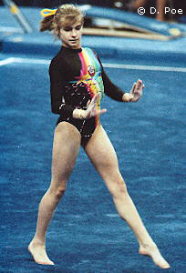

Ludmila Stovbchataya (USSR/UKR)
1992 European B Bronze Medalist

Medal Total
European Championships: 1 Bronze
Ludmila was born on March 1, 1974, in
Odessa. Today, she's married to gymnast Vladimir Shamenko, who was a
member of the 1996 Ukrainian Olympic men's team. They have a son and a daughter,
and coach in Virginia.
Competition Results
- 1987
Jr. Friendship Tournament (Druzhba): 2nd Team,
18th AA
- Jr. USSR Championships: 3rd AA
-
- 1988
- Jr. USSR-GDR Dual Meet: 1st Team, 6th AA, 2nd FX
- Jr. USSR Championships: 1st AA, 1st B, 1st FX, 2nd UB
-
- 1989
- Jr. European Team Championships: 1st Team
Leningrad International: 4th AA
- USA-USSR Dual Meet: 1st Team, 4th AA
USSR Championships: 16th AA
- USSR Cup: 8th AA, 7th FX
1990
USSR Championships: 10th AA, 4th B
-
- 1991
- American Cup: 3rd AA
- Gander Memorial: 4th AA
- Intl. Mixed Pairs: 3rd Team
- Seiko Grand Prix: 3rd AA, 3rd V
- USSR Championships: 20th AA, 1st B, 5th
FX, 8th V
-
- 1992
- Chunichi Cup: 8th AA, 1st B, 1st FX
- CIS Championships: 7th AA, 1st FX
- European Championships: 6th AA, 3rd B
- Tokyo Cup: 1st B, 1st FX
- World Stars: 6th AA
-
- 1993
- American Cup:
- Cottbus International: 3rd AA, 1st FX, 3rd V, 3rd UB
- European Cup: 4th AA, 2nd B, 4th V, 5th UB, 5th FX
- International Championships of Romania: 2nd AA
- Intl. Mixed Pairs: 5th Team
- Kosice International: 3rd AA, 1st B
- University Games: 1st Team, 2nd AA, 2nd B, 3rd UB, 3rd
FX
- USA-BLR-UKR Tri-Meet: 8th AA
- World Championships: 14th AA
This page was last updated on July 19, 2024. .
© Gymn Forum